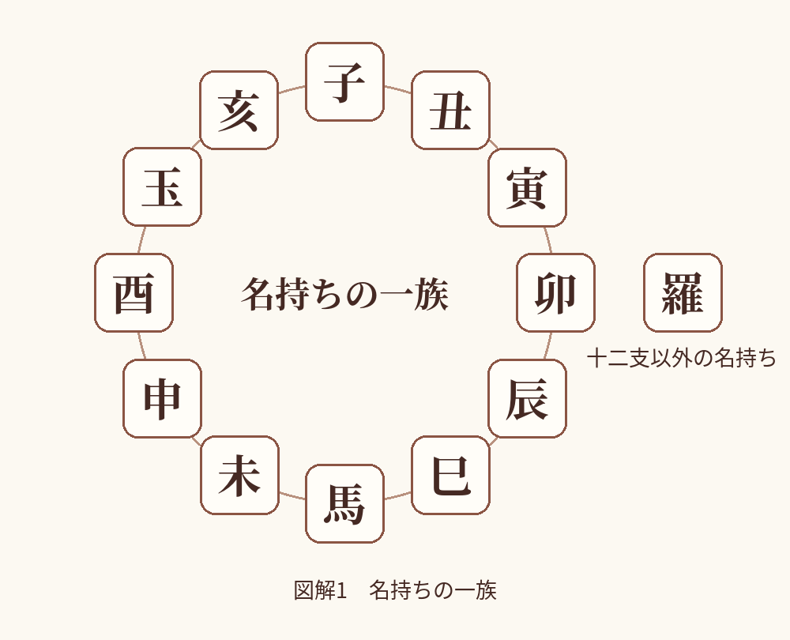

薬屋のひとりごと
名持ちの一族
「名持ちの一族」とは、皇帝から一族を示す一字を与えられた家のことです。円の中には十二支に由来する古参の家を中心に、玉葉皇后の実家である玉の一族も配置しています。羅漢や羅門の「羅」は、円の外に示しています。
玉葉が皇帝の正室となる時期に、その実家である玉の一族は、十数年前に途絶えた戌の一族に代わって、新たに名持ちに加わります。

円の中の12枠
- 子の一族 ― 子昌、神美、楼蘭（子翠）、翠苓、趙迂。小説第5巻・第一話「蝗」の時点では、反乱により一族としては滅んでいます。
- 丑の一族 ― 丑喜。名持ちの一族が集まる会合を始めた家で、代々その取りまとめを担っています。第14巻では丑喜が別邸で客を迎えます。
- 寅の一族 ― 十二支の「寅」に当たる枠です。小説での主な人物や一族の役割は確認できていません。
- 卯の一族 ― 里樹妃、卯柳。里樹妃の母方の実家に当たる古参の名家で、父の卯柳は婿入りしています。
- 辰の一族 ― 第14巻の名持ちの会合に登場する古参の家です。一族の男性が姚に恋文を送り、羅半の兄が姚を助けるために動きます。
- 巳の一族 ― 雀。雀の出身に関わる古参の家で、原作ウェブ版「後継者」では、桃美がその一族について馬良に語ります。
- 馬の一族 ― 高順、桃美、麻美、馬良、馬閃。十二支の「午」に当たり、皇族の護衛を担う家です。
- 未の一族 ― 十二支の「未」に当たる枠です。小説での主な人物や一族の役割は確認できていません。
- 申の一族 ― 第14巻の名持ちの会合に関連して名前が挙がる家です。主な人物や一族の役割は確認できていません。
- 酉の一族 ― 十二支の「酉」に当たる枠です。小説での主な人物や一族の役割は確認できていません。
- 玉の一族 ― 玉葉皇后、楊玉袁、楊玉鶯。西方に勢力を持つ玉葉皇后の実家で、玉葉が皇帝の正室となる時期に、新たに名持ちに加わります。
- 亥の一族 ― 十二支の「亥」に当たる枠です。小説での主な人物や一族の役割は確認できていません。
円の外
- 羅の一族 ― 羅漢、羅門、羅半。猫猫の実父である羅漢の家で、十二支以外の字を授けられた名持ちです。第6巻・第六話と第七話の「羅の一族」前編・後編で描かれます。